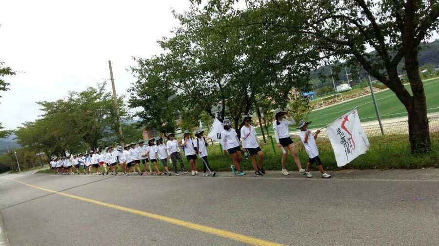

관광교육 연구 · 역사문화 탐방 · 전국 관광교사 지원
장군의 발자취를 따라
미래 인재를 키웁니다
이순신 백의종군로 82km — 극기·도전·인내의 역사 현장.
전국 관광교사·학생·기업이 함께 걷고 배우는
한국관광교육연구원이 15년째 이어가는 살아있는 교육입니다.
3,272명
누적 탐방
82km
탐방 코스
15년
2010년 설립
9년+
하동군 협약

백의종군로 탐방
함께 걷는 역사의 길 (해운대여중)

워크숍·연수 2025 전국관광교사·교수 워크숍

교육·연구 불멸의 이순신 윤영수 작가 특강